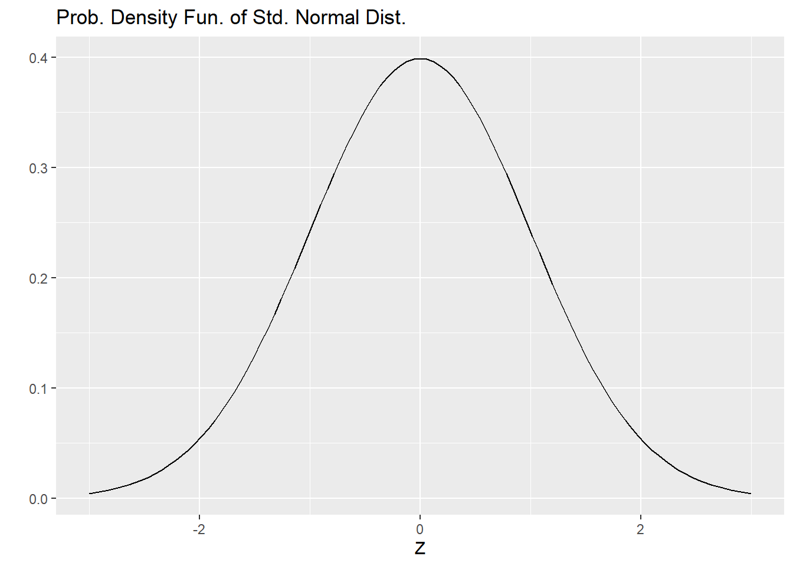
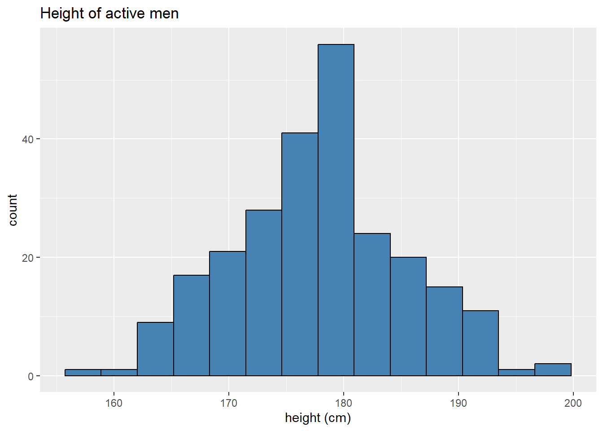
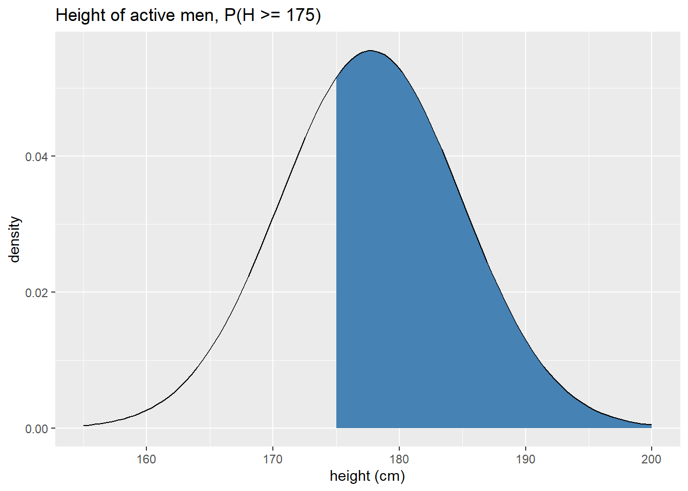
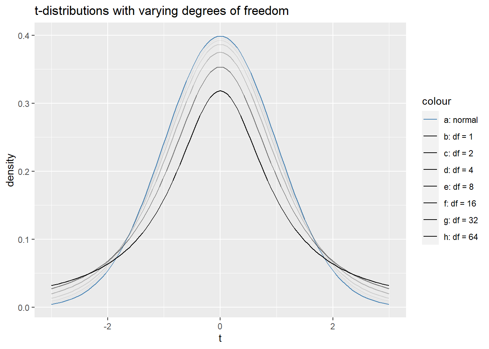
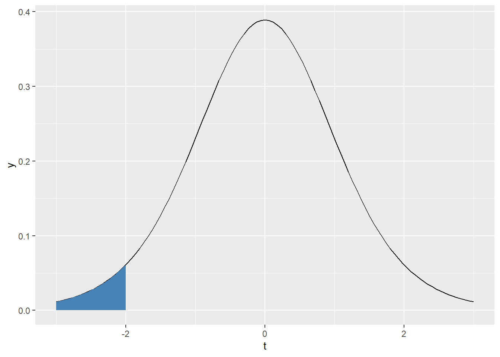
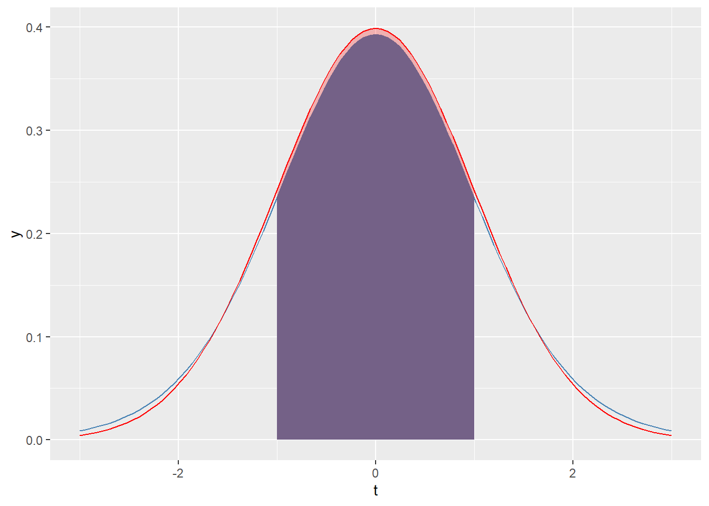

Chapter 5 Distribution calculations
The second module of STAT216 at FVCC focuses on the basics of probability theory. We start out learning the foundations: interpretations of probability (frequentist vs Bayesian) along with the notions of independence, mutually exclusive events, conditional probability, and Bayes’ Theorem.
We then move on to thinking about random variables. Recall that a random variable is simply the assignment of a number to every element of the sample space for the random process in question. From this assignment we can assign probabilities to the values our random variable can take on. Random variables also give us a way to define the average outcome of a random process and measure the spread of outcomes around that average.
Recall that random variables come in two primary flavors, discrete and continuous. Continuous random variables can take on at least some interval worth of real numbers. Discrete random variables, on the other hand, can only take on values with sufficiently large gaps in between. For example, the height of a STAT216 student is a continuous random variable, but the number of books a STAT216 student owns in discrete. Distinguishing between these two types of random variables is important because the flavor dictates quite a bit about how we use and make calculations associated with a given random variable. The probability distribution of a discrete random variable can be represented in a tabular form, but the probability distribution of a continuous random variable must be represented by a function. The table below helps compare and contrast discrete and continuous probability distributions.
| Discrete | Continuous |
|---|---|
| all probabilities \(\geq 0\) | graph of function above or on \(x\)-axis |
| sum of probabilities is 1 | area between graph of function and \(x\)-axis is one |
Short technical note: Using the right mathematical perspective you do not actually treat discrete and continuous random variables any differently, but this perspective takes a lot of technical machinery and isn’t necessary. Suffice it to say that the analogies above are more than just analogies.
There are many, many different types of each flavor of random variable - too many to name or describe - but statisticians and mathematicians have studied many families of random variables that have commonalities. In STAT216, we learn about a handful of these families, discussed below. You can skip the details for now and come back to these as we learn more about them in class.
Discrete distributions:
- Bernoulli random variables: only two outcomes, typically 0 and 1 with 0 corresponding to failure and 1 to success for the random process you’re studying.
| \(x_i\) | 0 | 1 |
|---|---|---|
| \(P(X = x_i)\) | \(1-p\) | \(p\) |
- Geometric random variables: repeat independent identical (iid) trials of a Bernoulli random variable until the first success and count the number of trials. If \(p\) is the probability of success in a single trial,
\[ P(X = k) = (1-p)^{k-1}p \]
- Binomial random variables: repeat a fixed number \(n\) of iid trials of a Bernoulli random variable and count the number of successes, \(k\).
\[ P(X = k) = {n \choose k} p^k (1-p)^{n-k}\]
Continuous distributions:
Normal distributions: a family of symmetric, unimodal continuous distributions determined by an average and standard deviation.
Student’s \(t\)-distribution: a family of symmetric, unimondal continuous distributions determined by a single quantity: degrees of freedom, \(df\). These distributions have fatter tails than standard normal distribution.
\(\chi_^2\)-distributions: a family of right-skewed distributions determined by a single parameter, \(df\), or degrees of freedom. A \(\chi^2\)-distribution is a sum of \(df\) squared standard normal distributions.
\(F\)-distributions; a family of right-skewed distributions determined by two degrees of freedom \(df_1\) and \(df_2\). Roughly speaking, an \(F\)-distribution is the ratio of two \(\chi^2\) distributions
The remainder of this chapter focuses on how to make calculations for each of these distributions in R. This may come as a welcome relief from the last few chapters because we’ll be using R more as a big calculator again for a bit.
5.1 Finite discrete distribution calculations
This short section will describe how to calculate the expected value, variance, and standard deviation of a finite, discrete probability distribution. The key is to remember that R performs all list calculations component-wise. With this in mind, recall that the expected value and variance of a finite discrete random variable \(X\) are
\[ E(X) = \sum_{i= 1}^n x_i P(X = x_i) \quad \text{and} \quad V(X) = \sum_{i = 1}^n P(X = x_i)\left(x_i - E(X) \right)^2\]
so \(E(X)\) is just the average outcome of \(X\), weighted by the probabilities associated to each value of \(X\). Similarly \(V(X)\) is just the average squared deviation of the values of \(X\) from the mean. Let’s learn how to make these calculations in R from an example. Suppose you and your friends invent a silly game to pass the time based on flipping a coin and rolling a standard six-sided die.
If you flip a heads and roll an even number, you win a dollar.
If you flip a heads and roll an odd prime, you win two dollars.
If you flip a tails and roll a 6, you win five dollars.
Otherwise, you win nothing.
Question How much should you and your friends charge to play the game?
To answer this, we need to know the expected winnings since expected value gives us the average outcome. You and your friends need to charge at least the expected winnings. To make this calculation in R we need to store the values of our random variable and the associated probabilities in lists.
The sample space for our game has size 12; you can think about is as the collection of ordered pairs \(\{ (x,y) | x \in \{H, T\}, y \in \{1,2,\ldots, 6\} \}\). There are 3 ways to flip a heads and roll an even number, two ways to flip a heads and roll an odd prime, and only one way to flip a tails and roll a six. Thus the probability distribution of our winnings is
| \(x_i\) | 1 | 2 | 5 | 0 |
|---|---|---|---|---|
| \(P(X = x_i)\) | 3/12 | 2/12 | 1/12 | 6/12 |
Storing this in R
val <- c(1,2,5,0)
prob <- c(3/12, 2/12, 1/12, 6/12)Now, to calculate the expected value, we just need to add up the product of val and prob:
exp_val <- sum(val*prob)
exp_val## [1] 1So on average, a player of this game will win one dollar. This means you and your friends should charge at least one dollar to play the game.
Let’s also calculate the variance and standard deviation of the winnings for this game. The strategy for calculating variance is exactly the same as with the expected value.
varX <- sum(prob*(val - exp_val)^2)
varX## [1] 2As usual, the standard deviation is just the square root of the variance so
sdX <- sqrt(varX)
sdX## [1] 1.414214This means, on average, someone playing this game will win $1 with an average change between games of about $1.41.
Next up, we’ll learn about making probability calculations for some of the named distributions discussed in the beginning of this chapter.
5.2 Named distribution calculations
R has a robust library of probability distribution calculators built in. The functions are organized so that they behave similarly for all of the families of distributions. The basic syntax is
\[ \text{function type} + \text{distribution} \]
The table below describes the type of function and describes what they do for both continuous and discrete probability distributions
| Function | input | Continuous | Discrete |
|---|---|---|---|
d (density) |
value of random variable | value of function / height of graph of probability density function at a given \(x\)-value | Probability that random variable takes on a specific value |
p (percentile) |
value of random variable | returns a percentile, ie a lower tail probability of associated to a value of the random variable, \(P(X \leq x)\). | Same as continuous |
q (quantile) |
a percentile | returns a quantile, ie the value of a random variable corresponding to the percentile input | Same as continuous |
r (random) |
whole number \(n\) | \(n\) randomly sampled numbers from the distribution | Same as continuous |
Note that the biggest difference lies in the the density functions. This is because probabilities correspond to areas under the graph of the probability density function for continuous random variables, so the probability of observing any particular value is zero in this case. For a discrete probability distribution, however, the density function actually returns probabilities.
The percentile p and the quantile q functions both have an option called lower.tail that is a logical, so either TRUE or FALSE.
If
lower.tail=TRUE, the percentile functions return \(P(X \leq x)\) and the quantile functions return the value \(x\) such that \(P(X \leq x)\).If
lower.tail=FALSE, the percentile functions return \(P(X > x)\) and the quantile functions return the value \(x\) such that \(P(X > x)\).
We will look at examples in what follows that will clarify these functions and their arguments.
5.2.1 Discrete random variables
Let’s start off with some named families of discrete random variables. We’ll only look at binomial and geometric distributions, but once you have these down, you should be be able to figure out how to use any other discrete random variable distribution functions such as those associated to Poisson or hypergeometric random variables. Note: we do not cover Poisson on or hypergeometric distributions in this class!
5.2.1.1 Binomial distribution
We’ll start with the definition and a motivating example.
Definition: Suppose you repeat independent and identical trials of a Bernoulli experiment a fixed number \(n\) times. The random variable \(X\) counting the number of successes \(k\) is called a binomial random variable. If the probability of success in each trial is \(p\), then the probability of failure is \(1-p\) and A little work shows
\[ P(X = k) = { n \choose k } p^k (1-p)^{n-k}. \]
In class we learn formulas for the expected value and variance of geometric random variables:
\[ E(X) = np \quad \text{and} \quad V(X) = np(1-p). \]
The R shorthand for binomial distributions is binom, so the primary functions for binomial calculations and their outputs are:
dbinom(k, n, p)\(= P( X = k) = { n \choose k } p^k (1-p)^{n-k}\)pbinom(k, n, p)\(= P( X \leq k) = \sum_{i=0}^k { n \choose i } p^i (1-p)^{n-i}\)pbinom(k, n, p, lower.tail = FALSE)\(= P( X > k) = \sum_{i=k+1}^n { n \choose i } p^i (1-p)^{n-i}\)qbinom(prob, n, p)is the integer \(k\) such that \(P(X \leq k) =\)prob.qbinom(prob, n, p, lower.tail = FALSE)is the integer \(k\) such that \(P(X > k) =\)prob.rbinom(N, n, p)generatesNnumbers between \(0\) and \(n\) by repeating the binomial experimentNtimes.
Now let’s look at an example to see how we can use these functions in practice.
Example: A Gallup poll showed that roughly 43% of all voters in the USA identify as politically independent as of September 16, 2022. You decide to loosely test this claim in the Flathead Valley by polling a random sample of 15 people about their political ideology.
Assuming the distribution of political party affiliation in the Flathead is the same as the nation, counting the number of independents in your poll determines a binomial random variable.
We can get a feel for the distribution of this variable with a bar chart.
bf <- tibble(k = 0:15,
prob = dbinom(k, 15, .43))
ggplot(bf, aes(x = as.factor(k), y = prob)) +
geom_col(color = "black", fill = "steelblue") +
xlab("k") +
ylab("P(X=k)") +
labs(title = "Binomial Prob dist w/ p = .43 and n = 15")Now let’s use R to answer the following questions:
What is the probability of exactly 4 independents in your poll?
We want \(P(X = 4)\), with \(n = 15\), \(k = 4\) and \(p = .43\), so
dbinom(4, 15, .43)## [1] 0.0963008What is the probability of at most 4 independents in your poll?
We want \(P(X \leq 4)\), with \(n = 15\), \(k = 4\) and \(p = .43\), so
pbinom(4, 15, .43)## [1] 0.1545517What is the probability of at least 4 independents in your poll?
We want \(P(X \geq 4) = P(X > 3)\), with \(n = 15\), \(k = 4\) and \(p = .43\), so
pbinom(3, 15, .43, lower.tail= FALSE)## [1] 0.9417491#or 1 - pbinom(3, 15, .43)## [1] 0.9417491What is the third quartile of this distribution?
We want to find the value \(k\) so that \(P(X \leq k) = .75\), so
qbinom(.75, 15, .43)## [1] 8Now note:
pbinom(8, 15, .43)## [1] 0.857269which is greater than .75; R finds the closest integer valued quantile without going under the given percentile.
5.2.1.2 Geometric distribution
As above, we’ll start with a definition then move to a motivating example.
Definition: Suppose you repeat independent and identical trials of a Bernoulli experiment until your first success. The random variable \(X\) counting the number of trials you perform is a geometric random variable. If the probability of success in each trial is \(p\), then the probability of failure is \(1-p\) and some work shows
\[ P(X = k ) = p(1-p)^{k-1}\]
In class we learn formulas for the expected value and variance of geometric random variables:
\[ E(X) = \frac{1}{p} \quad \text{and} \quad V(X) = \frac{1-p}{p^2}. \]
The R shorthand for binomial distributions is geom. R requires that you enter the number of failures before your first success, so the primary functions for binomial calculations and their outputs are:
dgeom(k-1, n, p)\(= P(X = k ) = p(1-p)^{k-1}\)pgeom(k-1, n, p)\(= P( X \leq k) = \sum_{i=1}^{k} p (1-p)^{i-1}\)pgeom(k-1, n, p, lower.tail = FALSE)\(= P( X > k) = \sum_{i=k+1}^\infty p (1-p)^{i-1}\)qgeom(prob, n, p)is the integer \(k\) such that \(P(X \leq k) =\)prob.qgeom(prob, n, p, lower.tail = FALSE)is the integer \(k\) such that \(P(X > k) =\)prob.rbinom(N, n, p)generatesNintegers by performing the experiment \(N\) times and count the number of trials until the first success.
Let’s use the same example, but in a slightly different context to help differentiate between binomial and geometric random variables.
Example: A Gallup poll showed that roughly 43% of all voters in the USA identify as politically independent as of September 16, 2022. You decide to loosely test this claim in the Flathead Valley by polling random people until you find someone who identify as politically independent. You count the number of people you survey.
Assuming the distribution of political party affiliation in the Flathead is the same as the nation, counting the number of people you survey until your first independent determines a geometric random variable.
We can get a feel for the distribution of this variable with a bar chart.
gf <- tibble(k = 1:15,
prob = dgeom(k-1,.43))
ggplot(gf, aes(x = as.factor(k), y = prob)) +
geom_col(color = "black", fill = "steelblue") +
xlab("k") +
ylab("P(X=k)") +
labs(title = "Geometric Prob. dist. w/ p = .43 for k = 1 to 15")What is the probability you the 6th person you poll is the first independent?
We’re trying to find \(P(X = 6)\), so
dgeom(5, .43)## [1] 0.02587276# or (1-.43)^5*.43## [1] 0.02587276What is the probability you will survey at most 6 people before meeting your first independent?
We’re trying to find \(P(X \leq 6)\) so
pgeom(5, .43)## [1] 0.9657036What is the probability you will survey at least 6 people before meeting your first independent?
We’re trying to find \(P(X \geq 6) = P(X > 5)\) so
pgeom(4, .43, lower.tail = FALSE) # 1 - P(X <= 5) = P(X >5) = P(X >=6)## [1] 0.06016921# or 1 - (dgeom(0, .43) + dgeom(1, .43) + dgeom(2, .43) + dgeom(3, .43) + dgeom(4, .43))## [1] 0.06016921What is the third quartile of this distribution?
qgeom(.75, .43)## [1] 2As with a binomial random variable, note that
pgeom(2, .43)## [1] 0.814807is greater than .75; R finds the nearest integer yielding a larger percentile.
5.2.2 Continuous random variables
As mentioned earlier in this Chapter, we will encounter numerous families of continuous distributions throughout this course. The normal distributions are likely the most important for our purposes. Moreover, once you get a feel for making normal distribution calculations in R, you’ll be in a great place for understanding and making calculations using any of the remaining distributions. Thus, we will mostly focus on normal distributions in this section.
We remind the reader that if \(X\) is a continuous random variable, then \(X\) has an associated function called a probability density function \(f\). An area between the graph of \(f\) and the horizontal axis represents a probability. With this in mind
- \(P(X = k) = 0\) for any value \(k\) since the area of a line is 0.
- Thus: \(P(X \leq k ) = P(X < k)\) and \(P(X \geq k ) = P(X > k)\)
For us, from a calculation perspective, this is one of the main differences between discrete and continuous random variables.
5.2.2.1 Normal distributions
Long before you enrolled in this class you likely interacted with normal distributions: they are the famous “bell-shaped curves.” In more mathematical language, they are symmetric, unimodal distributions. Note that they are not the only distributions with these properties, but in some sense, they are the most common. Normal distributions arise often in practice because
many naturally observed quantities follow approximately normal distributions (eg height, weight, etc of populations of critters) and
the distributions of many sample statistics are approximately normal. For instance, imagine all possible random samples of 1000 Flathead county residents. For each of these samples, record the proportion of people who identify as politically Republican. This is a random variable that is approximately normally distributed. More on this in later chapters - this is a quick example of a sampling distribution which a key tool for statistical inference.
From an intuitive perspective, a bell shaped curve should be determined by two quantities: its center (determining the line of symmetry) and its spread. In fact, these two quantities are the parameters determining a normal distribution! We call the center the mean \(\mu\) and the spread standard deviation \(\sigma\). If a random variable \(X\) we may sometimes write
\[ X \sim N( \mu, \sigma ) \]
to indicate that \(X\) is normally distributed with mean \(\mu\) and standard deviation \(\sigma\).
There is one special distinguished normal distribution that we call the standard normal distribution: it has a mean of \(\mu = 0\) and a standard deviation of \(\sigma = 1\). We call this the standard normal distribution and typically denote it with \(Z\), so
\[ Z \sim N(\mu = 0, \sigma = 1). \]
The plot below shows the standard normal curve.
ggplot( tibble( x = c(-3,3)),
aes(x = x)) +
stat_function(fun = dnorm) +
xlab("Z") +
ylab("") +
labs(title = "Prob. Density Fun. of Std. Normal Dist.")
The standard normal is distinguished because any normal distribution \(X\) can be transformed into the standard normal by taking Z-scores. The \(Z\)-score of a measurement \(x\) from a normal distribution $ X N( , )$ is
\[ z = \frac{x - \mu}{\sigma}.\]
Notice that if
\(x = \mu\), then \(z = 0\),
\(x = \mu \pm \sigma\), then \(z = \pm 1\).
From this we see that \(X\) in fact is transformed into the standard normal distribution.
Now that we’ve reviewed the basics of normal distributions, let’s see how we can make some probability calculations using R. It should be no surprise that the main functions are pnom(...) and qnorm(...). If \(X \sim N(m, s)\)
dnorm(k, m, s)is the height of the graph of the probability density function at \(X = k\). !Caution! this is not a probability!pnorm(k, m, s)\(= P( X \leq k)\)pnorm(k, m, s, lower.tail = FALSE)\(= P( X > k) = P(X \geq k)\)qnorm(p, m, s) = kis the value \(k\) such that \(P(X \leq k) = p\).qnorm(p, m, s, lower.tail = FALSE) = kis the value \(k\) such that \(P(X > k) = p\).rnorm(n, m, s)returns a list of \(n\) randomly sampled numbers from \(N(m, s)\).
Note: if you don’t specify a mean or standard deviation, R will default to the standard normal distribution.
Let’s close this section with an example, starting with a sample and approximating the sample’s distribution with a normal distribution to make some probability estimates.
The data we’ll use is the bdims data set from the openintro package. This data set gives many measurements of 507 physically active individuals; we will investigate the height variable hgt, which records a participant’s height in centimeters.
The sample contains data on both men and women; let’s focus on men in this sample.
maleBdim <- bdims %>%
filter(sex == 1)Male height is approximately normally distributed as evidenced by the histogram below.
ggplot(maleBdim, aes(x = hgt)) +
geom_histogram(bins = 14,
color = "black",
fill = "steelblue") +
labs(x = "height (cm)",
title = "Height of active men")
the mean and standard deviation of this sample are
m <- mean(maleBdim$hgt)
s <- sd(maleBdim$hgt)
c(m, s)## [1] 177.745344 7.183629and we can overlay a normal curve onto our histogram to heuristically assess the fit.
ggplot(maleBdim, aes(x = hgt)) +
# scales y-axis to a probability density
geom_histogram(aes(y = ..density..),
bins = 14,
color = "black",
fill = "steelblue") +
# adds our normal curve
stat_function(fun = dnorm,
args = list(mean = m,
sd = s),
color = "red") +
labs(x = "height (cm)",
title = "Height of active men")
It’s not a perfect fit, of course, but it’s looking pretty good! If we think of our sample as an approximation of the population we’re sampling from, we can use the normal distribution above to make probability calculations for the population.
Below we’ll answer these questions and plot the regions corresponding to the probabilities in question.
What is the probability a randomly sampled active male is shorter than 185 centimeters?
First we’ll plot the region.
ggplot(tibble(height = c(155,200)), aes(x = height)) + stat_function( fun = dnorm, args = list(mean = m, sd = s), geom = "area", xlim = c(155, 185), #define fill region fill = "steelblue") + stat_function( fun = dnorm, args = list(mean = m, sd = s), geom = "line", color = "black") + labs(x = "height (cm)", y = "density", title = "Height of active men, P(H <= 185)")
From the image above, we infer that the probability better be greater than .5. To make this calculation exactly we use
pnorm(185, mean = m, sd = s)## [1] 0.8437254recalling that we stored the mean as
mand the standard deviation assabove.What is the probability a randomly sampled active male is taller than 175 cm?
Again we’ll plot the region.
ggplot(tibble(height = c(155,200)), aes(x = height)) + stat_function( fun = dnorm, args = list(mean = m, sd = s), geom = "area", xlim = c(175, 200), #define fill region fill = "steelblue") + stat_function( fun = dnorm, args = list(mean = m, sd = s), geom = "line", color = "black") + labs(x = "height (cm)", y = "density", title = "Height of active men, P(H >= 175)")
The exact probablity can be calculated as
pnorm(175, mean = m, sd = s, lower.tail = FALSE)## [1] 0.6488312What is the probability a randomly sampled active male is between 165 and 175 cm?
Again we’ll plot the region.
ggplot(tibble(height = c(155,200)), aes(x = height)) + stat_function( fun = dnorm, args = list(mean = m, sd = s), geom = "area", xlim = c(165, 175), #define fill region fill = "steelblue") + stat_function( fun = dnorm, args = list(mean = m, sd = s), geom = "line", color = "black") + labs(x = "height (cm)", y = "density", title = "Height of active men, P(165 <= H <= 175)")To calculate the probability, observe that \(P(165 \leq H \leq 175) = P(H \leq 175) - P(H \leq 165)\). In other words, we take the larger lower tail and subtract off the smaller lower tail. Making this calculation in R:
pnorm(175, mean = m, sd = s) - pnorm(165, mean = m, sd = s)## [1] 0.3131555You meet someone online and they say that they’re an active guy in the 80th percentile for height. How tall is this person?
We are given a probability/percentile and want the value associated to that, so we need to use the
qnorm(...)function. In particular,qnorm(.8, mean = m, sd = s)## [1] 183.7912We can check this calculation with
pnorm(...).pnorm(183.7912, mean = m, sd = s)## [1] 0.7999985Pretty good! This means if you’re about 183.8 cm tall (about 6ft.) you’d be in the 80th percentile for active adult US men.
These calculations and visuals should help you get started in calculating normal distribution probabilities. It is crucial to visualize or even actually sketch out the probability you’re trying to calculate, especially when you’re getting started. Visualizing these probabilities helps you figure out exactly what combination of R functions you need to use.
The next distributions will be used later in this course when we discuss more involved types of sample statistics.
5.2.2.2 Chi-squared (or \(\chi^2\) ) distributions
This section will be completed later in the semester when these distributions are needed.
5.2.2.3 Student’s \(t\)-distribution
The Student’s \(t\)-distributions are a family of symmetric, unimodal distributions that have “fatter tails” than the standard normal distribution. We end up needing to use \(t\)-distributions when we’re analyzing single sample and two sample numerical data because the sample standard deviation is a biased estimator of the population standard deviation. We fatten up the tails of a normal distribution to account for the added uncertainty of this biased estimate. The uncertainty is larger when our sample size is small and decreases as the sample size increases.
The parameter that changes the area for the \(t\)-distributions is called degrees of freedom or \(df\). In fact, this is the only parameter needed to determine a \(t\)-distribution. As \(df\) goes to infinity, the corresponding \(t\)-distributions limit to the standard normal distribution. The plot below helps to see how this limiting occurs.
ggplot(data.frame(x = c(-3,3)), aes(x = x)) +
stat_function(fun = dnorm, geom = "line",
aes(color = "a: normal"),
show.legend = T) +
stat_function(fun = dt,args = c(df = 1), geom = "line",
aes(color = "b: df = 1" ), alpha = 1,
show.legend = T) +
stat_function(fun = dt,args = c(df = 2), geom = "line",
aes(color = "c: df = 2" ), alpha = 1/2,
show.legend = T) +
stat_function(fun = dt,args = c(df = 4), geom = "line",
aes(color = "d: df = 4"), alpha = 1/4,
show.legend = T) +
stat_function(fun = dt,args = c(df = 8), geom = "line",
aes(color = "e: df = 8"), alpha = 1/8,
show.legend = T) +
stat_function(fun = dt,args = c(df = 16), geom = "line",
aes(color = "f: df = 16"), alpha = 1/16,
show.legend = T) +
stat_function(fun = dt,args = c(df = 32), geom = "line",
aes(color = "g: df = 32"), alpha = 1/32,
show.legend = T) +
stat_function(fun = dt,args = c(df = 64), geom = "line",
aes(color = "h: df = 64"), alpha = 1/64,
show.legend = T) +
scale_color_manual(values = c("steelblue", rep("black", 7))) +
labs(x = "t", y = "density", title = "t-distributions with varying degrees of freedom") 
The main workhorse functions for making \(t\)-distribution calculations are, no surprise, pt(q, df) and qt(p, df). We’ll make a few quick calculations with these functions, but they work exactly like pnorm and qnorm, so if you’re comfortable with those functions, \(t\)-distributions will be a breeze.
What proportion of values fall below -2 in a \(t\) distribution with \(df = 10\)?
First, we’ll visualize this proportion as an area.
ggplot(tibble(t= c(-3,3)) , aes(x = t)) + stat_function( fun = dt , args = c(df = 10)) + stat_function(fun = dt , args = c(df = 10) , geom = 'area' , fill = 'steelblue' , xlim = c(-3, -2))
Following the lead from normal distributions this proportion is given by
pt(-2, df = 10)## [1] 0.03669402To emphasize that the tails of \(t\)-distribtuions are fatter, notice that the same proportion for the standard normal distribution is
pnorm(-2)## [1] 0.02275013While it might not seem like a huge difference, this will make an impact once we get to statistical inference!
What proportion of values fall between -1 and 1 in a \(t\)-distribution with \(df = 16\)?
First, we’ll visualize this proportion as an area in
steelbluewith the same central area of a normal distribution overlayed in red.ggplot(tibble(t= c(-3,3)) , aes(x = t)) + stat_function( fun = dt , args = c(df = 16) , color = 'steelblue') + stat_function(fun = dt , args = c(df = 16) , geom = 'area' , fill = 'steelblue' , xlim = c(-1, 1)) + stat_function(fun = dnorm , args = c(mean = 0, sd = 1) , color = 'red') + stat_function(fun = dnorm , args = c(mean = 0, sd = 1) , geom = 'area' , fill = 'red' , xlim = c(-1,1) , alpha = .25)
We see that since the \(t\)-disribution has fatter tails, the central area is less than that of the strandard normal distribution.
There are many ways to make the calculation at hand, but the following code chunk gives one easy way.
pt(1, df = 16 ) - pt(-1, df = 16)## [1] 0.667805Let’s contrast that with the same area for a standard normal curve.
pnorm(1) - pnorm(-1)## [1] 0.6826895As expected, the proportion for the standard normal is greater than that of the \(t\)-distribution.
What value corresponds to the 90th percentile in a \(t\)-distribution with \(df = 6\)?
Since we’re given a proprotion and want a value, this calculation requires
qt. It’s a simple one since the 90th percentile corresponds to a lower tail area. We’ll also print out the corresponding value for the standard normal distribution for comparison.qt(.9, df = 6)## [1] 1.439756qnorm(.9)## [1] 1.281552As expected, the 90th percentile in a \(t\)-distribution is larger (ie further away from the mean) than it is for the standard normal distribution.
If \(T\) is a \(t\)-distribution with \(df = 11\), what value \(t^\star\) corresponds to 95% of the central area? In other words, find the value \(t^star\) so that \(P(|T| \leq t^\star) = .95\).
These types of calculations will become important for us in the inferential statistics portion of the class. The image below shows the central area we’re trying to find, but we hide the code because it gives away the answer.
From the image above, we expect the value to be a little larger than 2. We can find this value using some quick reasoning that will become second hand to you. Since the central area is .95 the remaining tail area is .05. The tails are symmetric, so each tail has an area of .025. This means we want to find the value \(t^\star\) corresponding to an upper tail area of \(.025\). This value is calculated below.
qt(.025, df = 11, lower.tail = FALSE)## [1] 2.200985And as a quick double check, let’s make sure the corresponding central area is .95.
tStar <- qt(.025, df = 11, lower.tail = F) pt(tStar, df = 11) - pt(-tStar, df = 11)## [1] 0.95Success! Next up, we’ll look at \(F\)-distributions which are not symmetric and unimodal.